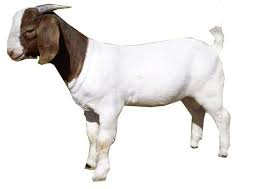

Rash Hour
Video provides a powerful way to help you prove
your point. When you click Online Video,
you can paste in the embed code for the
video you want to add. You can also type
a keyword to search online for the video
that best fits your document.
Inception
To make your document look professionally
produced, Word provides header, footer, cover
page, and text box designs that complement
each other. For example, you can add a matching
cover page, header, and sidebar. Click Insert
and then choose the elements you want from the different galleries.
Terminator
Themes and styles also help keep your document
coordinated. When you click Design and choose
a new Theme, the pictures, charts, and SmartArt
graphics change to match your new theme. When you
apply styles, your headings change to match the new theme.